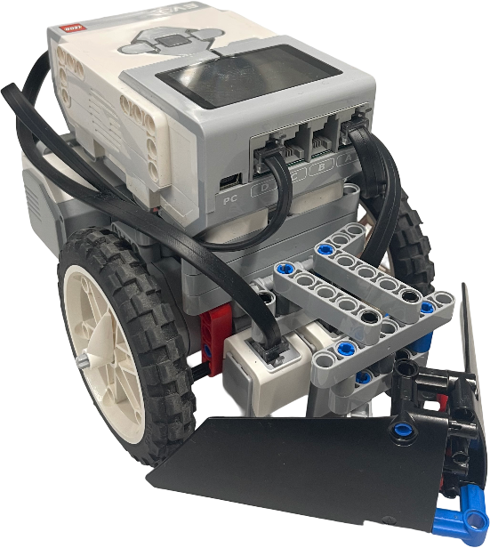
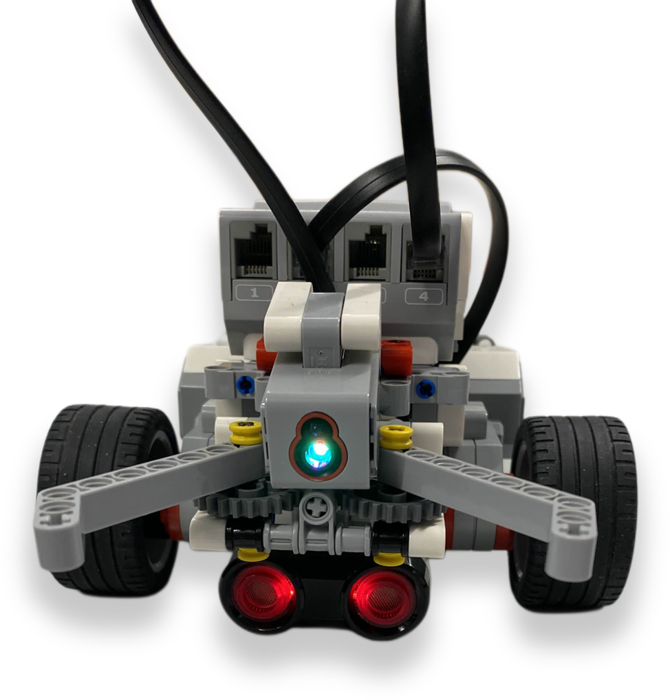

NTNU · IDATT1004 · Python · Team of 4
Two robotics projects built as part of NTNU's introductory engineering course. I served as Project Leader and Lead Software Engineer on both, handling group coordination, the majority of the programming, and version control via GitHub.

01
The objective was to design and program a robot capable of outperforming others on a custom course. I focused on programming and group management, spending most of my time debugging control logic, testing navigation strategies, and iterating on the mechanical design to optimise speed and stability.
We encountered both internal and external challenges that required iterative redesigns throughout. Managing a four-member team through this process reinforced how structured problem-solving and clear communication directly shape the quality of a final product. This was also the first time I seriously worked with GitHub to track changes and coordinate contributions across a team.

02
The second project advanced the platform into a fully autonomous system capable of identifying, collecting, and sorting waste. I continued in a technical lead role, focusing on sensor integration, detection logic, and movement optimisation. This meant rebuilding key components from earlier prototypes and calibrating sensor thresholds through repeated testing.
Mechanical inconsistencies and unstable readings required persistent refinement throughout development. The project deepened my understanding of autonomous system behaviour and reinforced two habits that carried into every project since: structured experimentation and detailed documentation.